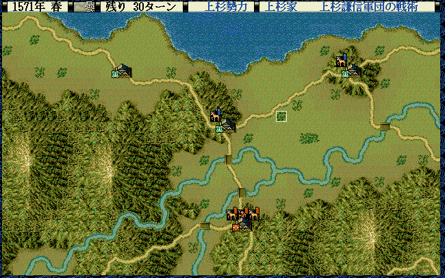
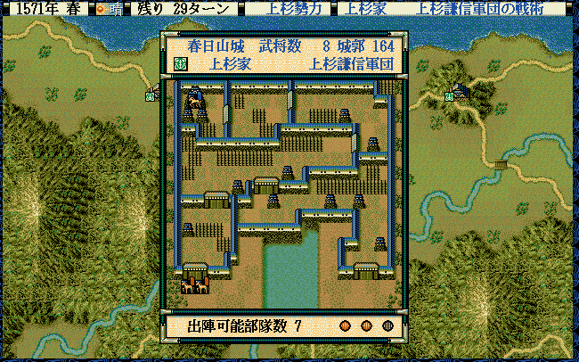

戦争を大きなくくりで判定したいことがあります。
戦争中なのか、野戦中なのか、攻城戦中なのか、などです。
void カスタム::On_戦争開始(戦争開始パラメタ型 パラメタ)
から戦争が始まり、
void カスタム::On_戦争終了()
で戦争が終わります。
戦争中は、各種対応するイベントハンドラが呼ばれるため、その中で記述すればよいため、
Is_戦争中() といった判定関数は用意されていませんが、下記のようにすれば簡単に実現できまます。
bool g戦争中 = false;
void カスタム::On_戦争開始(戦争開始パラメタ型 パラメタ) {
g戦争中 = true;
}
void カスタム::On_戦争終了() {
g戦争中 = false;
}
各イベントハンドラのタイミングの詳細は、
を、参照してください。
bool Is_野戦中()

bool Is_攻城戦中()

string カスタム::On_噴出メッセージ直前(string 武将名, string 元メッセージ, メッセージ関連情報型 メッセージ関連情報) {
// 武将番号【配列用】がはいってて、かつ、名前も渡ってきている
int iBushouID = メッセージ関連情報.第１人称【武将番号】 - 1;
if (武将名 == "真田幸隆") {
if (Is_文字列マッチ(元メッセージ, "わが隊はすでに\x0A士気旺盛")) {
if (Is_野戦中()) {
return "野戦中です";
}
else if (Is_攻城戦中()) {
return "攻城戦中です";
}
}
}
// 変更しない場合""
return "";
}
void カスタム::On_残りターン変更《戦争画面》(int 残りターン数) {
if (Is_野戦中()) {
デバッグ出力 << "野戦中です" << endl;
}
else if (Is_攻城戦中()) {
デバッグ出力 << "攻城戦中です" << endl;
}
}
void カスタム::On_ターン変更《攻城中画面》(int ターン数) {
if (Is_野戦中()) {
デバッグ出力 << "野戦中です" << endl;
}
else if (Is_攻城戦中()) {
デバッグ出力 << "攻城戦中です" << endl;
}
}
ゲーム中に通過する全てのイベントハンドラで判定可能ですが、
通常は「戦争時に通過するイベントハンドラ内で、使用することとなるでしょう。
WORD Get_攻城戦中の城番号()
「城番号」を得る関数ですので、「城番号【配列用】」を得るためには「-1」する必要があります。
string カスタム::On_噴出メッセージ直前(string 武将名, string 元メッセージ, メッセージ関連情報型 メッセージ関連情報) {
if (武将名 == "真田幸隆") {
if (Is_文字列マッチ(元メッセージ, "わが隊はすでに\x0A士気旺盛")) {
if (Is_攻城戦中()) {
int iCastleID = Get_攻城戦中の城番号() -1; // 城番号→城番号【配列用】
string 城名 = Get_城名(iCastleID) + Get_城称(iCastleID) ;
return 城名;
}
}
}
// 変更しない場合""
return "";
}
void カスタム::On_ターン変更《攻城中画面》(int ターン数) {
int iCastleID = Get_攻城戦中の城番号() - 1; // 城番号→城番号【配列用】
デバッグ出力 << Get_城名(iCastleID) + Get_城称(iCastleID) << endl;
}
「戦争 - 戦争と野戦と攻城戦」に関する主な所は以上となります。 詳しくは「戦場情報型.h」などを参照してください。